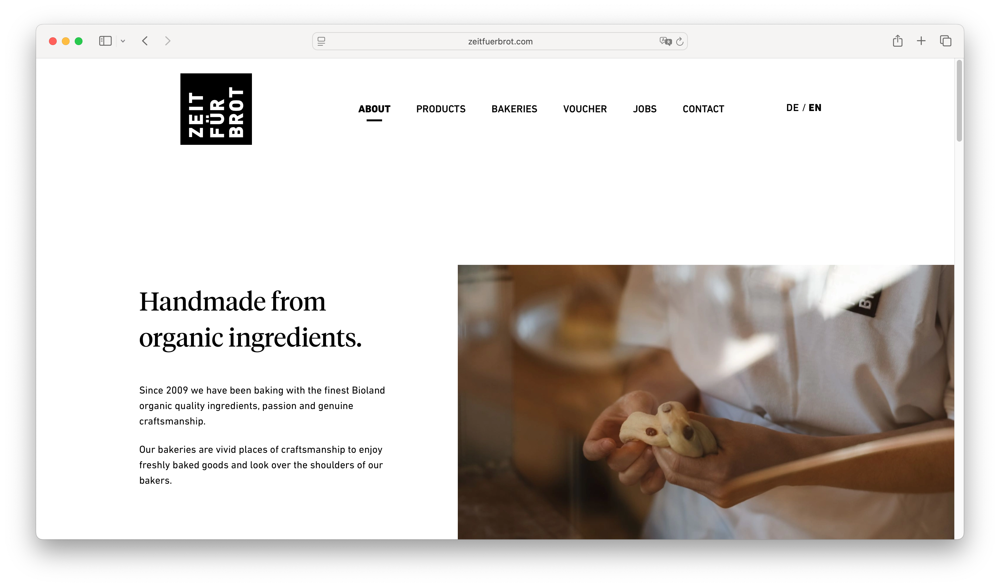
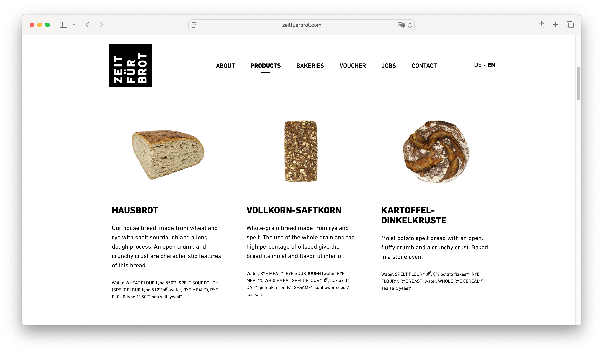
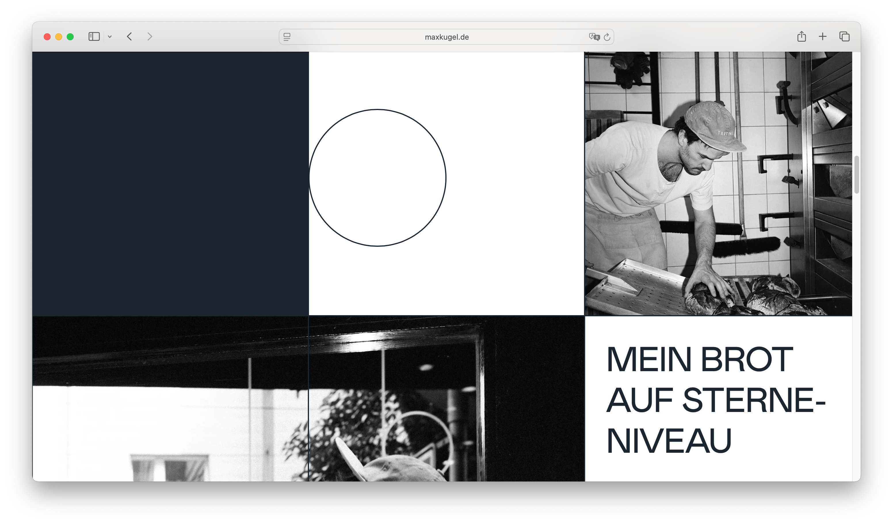
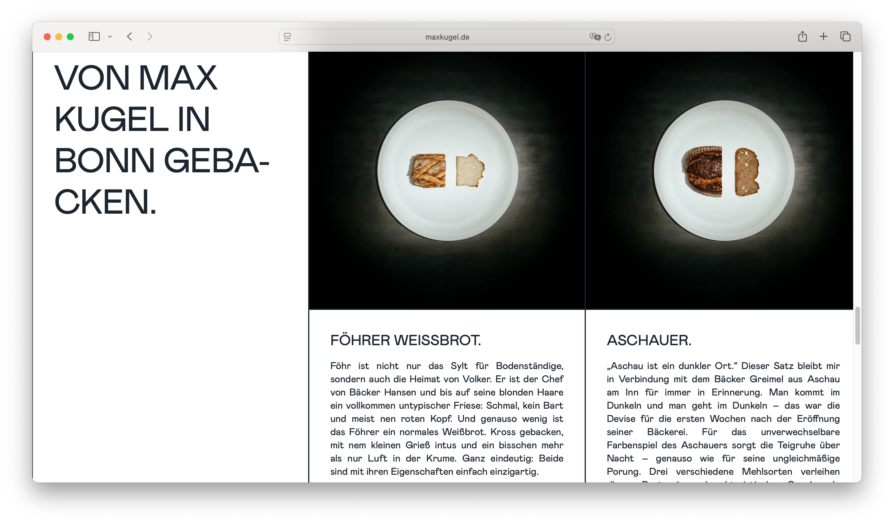
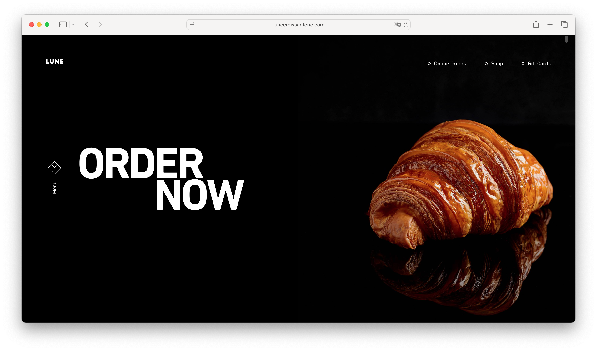
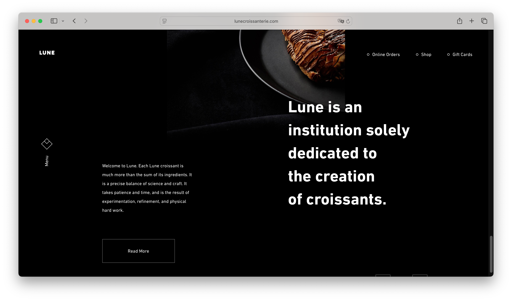

Morgenbrot Bakery
Morgenbrot Bakery is a small, artisan German bakery recently opened in Hayes Valley, San Francisco. The bakery specializes in traditional German breads and handcrafted sweet pastries, made using slow fermentation techniques and locally sourced California ingredients. Morgenbrot was created to bring authentic European bread culture to San Francisco. The bakery focuses on craftsmanship, simplicity, and quality over quantity. Every loaf is baked fresh daily in small batches, emphasizing natural fermentation, organic flour, and traditional methods.
The target audience consists of individuals who value high-quality, artisan food products and seek authenticity in their everyday experiences. They are drawn to thoughtfully crafted bread and pastries made with traditional techniques and locally sourced ingredients. Rather than mass-produced goods, they prefer products that reflect care, craftsmanship, and cultural heritage.
When visiting the website, they are looking for clarity, inspiration, and reassurance. They want to understand what makes the bakery special, learn about the baking process and ingredients, and quickly access essential information such as menu offerings, prices, location, and opening hours. They appreciate clean design, strong visual aesthetics, and a seamless browsing experience that reflects the bakery’s modern yet warm identity. Ultimately, they seek not only food, but a meaningful daily ritual.






Morgenbrot Bakery Artisan German Bread. Baked Fresh in San Francisco. Bringing slow-fermented European bread culture to Hayes Valley, one loaf at a time.
[Bread and German pastries.]
Our Philosophy At Morgenbrot, bread is not rushed. Each loaf is fermented for up to 48 hours, allowing time to develop deep flavor, texture, and character. We use locally sourced California grains and traditional German techniques to create bread that feels both rooted and modern. Simple ingredients. Honest craft. Everyday ritual.
[Bread dough kneading.]
Our breads and pastries are baked fresh daily in small batches. We believe good bread should be part of your daily life, not just a special occasion.
All items baked fresh daily. Availability may vary.
[German Rye Bread.]
Dense and flavorful traditional rye bread with a deep crust and slight tang from natural sourdough fermentation.
$8
[Farmer’s Bread.]
Rustic country loaf made from wheat and rye flour, with a crisp crust and airy interior.
$7.50
[Whole Grain Bread.]
Hearty whole-grain loaf packed with seeds and slow-fermented for rich, nutty flavor.
$8.50
[Sourdough Classic.]
Our naturally leavened wheat sourdough with a chewy crumb and caramelized crust.
$7
[German Cinnaman Roll.]
Soft, spiraled dough filled with cinnamon and brown sugar, lightly glazed.
$5
[Apfelstrudel.]
Traditional flaky pastry filled with spiced apples, raisins, and almond crumble.
$6
[German Donut.]
Pillowy yeast dough filled with raspberry jam and dusted with powdered sugar.
4.50
[Butter Croissant.]
Classic laminated pastry with crisp layers and rich European-style butter.
$4
[Almond Croissant.]
Twice-baked croissant filled with almond cream and topped with toasted almonds.
$5.50
[Seasonal Fruit Danish.]
Buttery pastry topped with locally sourced seasonal fruit and vanilla custard.
$5
Morgenbrot began with a longing for real bread. Founder Lukas Weber grew up in Bonn, where fresh bread was part of daily life. After training in Berlin’s artisan baking community, he moved to California, inspired by its local food movement and innovative spirit. But something was missing. The depth of slow-fermented rye. The crust of Bauernbrot. The comfort of a warm cinnamon roll on a Sunday morning. In 2025, Morgenbrot Bakery opened in Hayes Valley with a simple goal: bring authentic German baking traditions to San Francisco using the best local ingredients available.
[Bakery entrance.]
[Inside of the bakery.]
[Map showing a line from Bonn to San Francisco.]
Bakery 524 Linden Street San Francisco, CA 94102 Hayes Valley
[Simple map showing the bakery location in Hayes Valley.]
Tuesday – Sunday 7:30 AM – 3:00 PM Closed Monday
Phone: (415) 555-2184
Email: @morgenbrotbakery@gmail.com